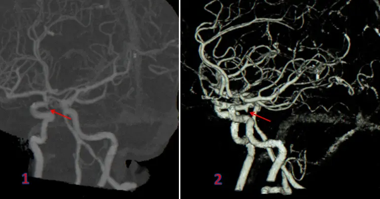

DX.10 — Anévrisme intracrânien compressif (paralysie du III)
Un anévrisme de la jonction entre la carotide interne et l'artère communicante postérieure peut comprimer le nerf oculomoteur (III) et annonce parfois sa propre ruptureS4. Le médecin reconnaît le tableau devant un ptosis, un œil dévié et une pupille dilatée, souvent avec une douleur autour de l'œilS4S6. Il demande alors une angiographie non invasive sans délai, même si la pupille est normale, car seule l'image écarte le sac anévrismalS4S5.
1. Définition
La recommandation commune de l'European Stroke Organisation (ESO), de l'European Association of Neurosurgical Societies (EANS) et de l'European Society for Minimally Invasive Neurological Therapy (ESMINT) a été publiée en 2026S2. Elle définit l'anévrisme intracrânien comme une évagination anormale de la paroi d'une artère intracrânienneS2. L'ESO précisait en 2022 qu'il s'agit d'une dilatation acquise et pathologique, située aux bifurcations des grosses artères cérébralesS3. Elle range parmi les anévrismes non rompus symptomatiques ceux qui donnent un déficit d'un nerf crânien, un effet de masse ou un événement thromboemboliqueS3. L'anévrisme compressif du III est donc un anévrisme non rompu, ou en voie de rupture, dont le sac comprime le nerf oculomoteur et produit sa paralysieS3S4.
2. Épidémiologie (Suisse, puis Europe)
En Suisse, le registre national Swiss SOS a recensé 1787 hémorragies sous-arachnoïdiennes (HSA) anévrismales entre 2009 et 2014, soit 3,7 cas pour 100 000 habitants par anS1. Les femmes représentaient 65,5 % des patients ; en outre, 22,1 % des patients étaient morts un an après l'hémorragieS1. En Europe, l'ESO estime qu'un anévrisme non rompu touche jusqu'à 3 % des adultes, avec une prévalence 1,6 fois plus élevée chez la femmeS3. L'anévrisme ne cause pourtant que 6 % des paralysies acquises du III dans la seule étude de population disponible, qui en compte 4,0 pour 100 000 habitants par anS5. Le tableau des chiffres, l'histoire naturelle et les enjeux de santé publique détaillent ces données.
Chiffres utiles, du registre suisse aux séries européennes
Le tableau réunit les chiffres lus pendant la préparation du cours ; chaque ligne nomme sa population, sa période et sa source.
| Chiffre | Population | Année | Source |
|---|---|---|---|
| L'incidence de l'HSA anévrismale atteint 3,7 pour 100 000 personnes par an | Suisse entière, 1787 patients consécutifs | 2009–2014 | Swiss SOSS1 |
| 58,8 % des patients vivent de façon autonome à un an, et 10,4 % survivent en état de dépendance | Même registre, suivi à un an de 91,3 % | 2009–2014 | Swiss SOSS1 |
| La létalité vaut 20,1 % à la sortie de l'hôpital et 22,1 % à un an | Même registre | 2009–2014 | Swiss SOSS1 |
| L'incidence mondiale de l'HSA anévrismale est passée de 10,2 à 6,1 pour 100 000 personnes-années | Données mondiales | 1980 puis 2010 | ESO/EANS/ESMINT 2026S2 |
| L'âge médian des patients atteints d'HSA anévrismale vaut 52 ans | Données reprises par la recommandation européenne | 2026 | ESO/EANS/ESMINT 2026S2 |
| Un anévrisme non rompu touche jusqu'à 3 % des adultes, 1,6 fois plus souvent les femmes | Europe, Amérique du Nord et Japon | 2022 | ESO 2022S3 |
| Le III paralysé acquis survient chez 4,0 personnes pour 100 000 par an, et chez 12,5 après 60 ans | Comté d'Olmsted, 145 cas | 1978–2014 | Fang 2017S5 |
| Les causes se répartissent ainsi : microvasculaire 42 %, traumatisme 12 %, tumeur 11 %, neurochirurgie 10 %, anévrisme 6 % | Même cohorte | 1978–2014 | Fang 2017S5 |
| Entre 20 et 32 % des anévrismes de la communicante postérieure paralysent le III | Séries reprises par une revue narrative | 2025 | Ge 2025S4 |
| Plus de 80 % des paralysies du III d'origine anévrismale viennent de la communicante postérieure | Même revue | 2025 | Ge 2025S4 |
| Environ 84 % des patients sont des femmes, avec un pic entre 40 et 60 ans | Deux études multicentriques citées | 2025 | Ge 2025S4 |
Le dénominateur change la part de l'anévrisme : dans une population entière, il ne cause que 6 % des III, mais cette part monte à environ 11 % après 60 ansS4. Les séries hospitalières anciennes plaçaient l'anévrisme en tête, avec 20 à 30 % des cas, car elles recrutaient les formes gravesS4.
Histoire naturelle chez l'individu
Un anévrisme non rompu peut rester stable, grossir puis rompre, ou rompre sans croissance préalableS3. Une croissance constatée à l'imagerie porte le risque de rupture à 2 à 10 % la première année, selon la taille, le siège et la forme du sacS3. Le score PHASES, construit sur six cohortes, situe le risque absolu de rupture à 5 ans entre 0,3 % et plus de 15 %S3.
La paralysie du III change ce pronostic, car elle peut annoncer une rupture imminente selon la revue de 2025S4. Si l'anévrisme rompt, la mortalité préhospitalière atteint 22 à 26 % et la mortalité hospitalière 19 à 20 %S4. Laissé sans traitement après la rupture, l'anévrisme resaigne chez environ 40 % des patientsS2.
Chez les survivants jeunes, le risque persiste toute la vie : 30,2 % ont formé un nouvel anévrisme 40 ans après une HSA survenue avant 40 ansS9. Cette cohorte de Stockholm n'a observé aucune rupture sous surveillance systématique, alors qu'un tiers des ruptures survenaient plus de 20 ans après l'hémorragie initialeS9.
Enjeux de santé publique
L'HSA anévrismale frappe tôt, car la moitié des patients a moins de 50 ans et environ deux tiers sont des femmesS2. Environ 40 % des patients meurent dans les 3 mois, et seul un tiers retrouve l'autonomie dans la vie quotidienneS2. Les survivants souffrent souvent de troubles de la mémoire, de la concentration, de fatigue et de dépression, ce qui pèse sur le retour au travailS2.
La Suisse fait mieux que la moyenne mondiale, puisque la létalité à un an y reste de 22,1 %S1. L'organisation des soins compte, car l'ESO suggère de traiter l'HSA dans un centre qui accueille au moins 70 patients par an, ou au moins 35 en région isoléeS2.
3. Physiopathologie
Le nerf III quitte le mésencéphale, traverse la citerne de la base, puis entre dans le sinus caverneux et l'orbite ; la base à connaître rappelle ce trajetS4. Dans sa portion cisternale, il court juste sous l'artère communicante postérieure, parallèle à elle, à environ 1,7 mm de distanceS4. Un sac né de la jonction carotide interne–communicante postérieure touche donc le nerf dès qu'il grossit de quelques millimètresS4. La chaîne de l'amorce au maintien explique ensuite comment la paroi malade conduit à la compression puis à la rupture.
Base à connaître : trajet et fibres du nerf III
Le nerf oculomoteur se divise, après sa sortie du tronc cérébral, en cinq segments : cisternal, pétroclinoïdien, caverneux, fissural et orbitaireS4. Le segment cisternal, le plus exposé, mesure environ 15 mm de long et 2,5 mm de diamètre ; il longe le bord de la tente du cerveletS4.
| Fibres | Cible | Signe en cas d'atteinte |
|---|---|---|
| Les fibres motrices somatiques innervent le releveur de la paupière | Élévation de la paupière supérieure | Le ptosis apparaîtS4 |
| Les fibres motrices innervent les droits supérieur, inférieur, médial et l'oblique inférieur | Élévation, abaissement, adduction | L'œil reste en bas et en dehorsS4 |
| Les fibres parasympathiques innervent le sphincter de l'iris et le muscle ciliaire | Constriction pupillaire et accommodation | La pupille se dilate et la vision de près devient floueS4S6 |
| Quelques fibres sensitives rejoignent la branche ophtalmique du trijumeau | Perception de la position de l'œil | Elles participent à la douleur périorbitaireS4 |
Les fibres pupillaires cheminent à la surface du tronc nerveux, dans sa couche supéro-médialeS4. Une compression les atteint donc tôt, tandis qu'un sac qui appuie par en dessous peut, rarement, épargner la pupilleS4. La voie sympathique de la pupille compte trois neurones, de l'hypothalamus au ganglion cervical supérieur, et innerve le dilatateur de l'irisS4. Quand le sphincter est paralysé, le dilatateur agit sans opposant, d'où la mydriaseS4.
Amorce, développement, installation, maintien
- Amorce. L'anévrisme se forme aux bifurcations des grosses artères, où la paroi se dilate de façon acquiseS3. Le tabac et l'hypertension artérielle favorisent sa formation, sa croissance et sa rupture, selon l'ESOS3.
- Développement. Le sac grossit lentement ou par à-coups ; une croissance d'au moins 1 mm sur un diamètre définit l'instabilité à l'imagerie de suiviS3. Un rehaussement de la paroi en IRM de paroi vasculaire se voit plus souvent dans les anévrismes instables que dans les stablesS3.
- Installation. Le sac appuie sur le nerf ou l'irrite ; les fibres pupillaires superficielles souffrent en premier, puis le ptosis et la limitation des mouvements apparaissentS4. Une irritation précoce explique les rares pupilles en myosis ou ovalairesS4.
- Maintien. La compression prolongée lèse les fibres et leur vascularisation, si bien que la récupération baisse avec la durée de la paralysie avant le traitementS4. Si le sac rompt, le resaignement, l'ischémie cérébrale retardée et l'hydrocéphalie dominent alors le pronosticS2.
La douleur périorbitaire reste mal expliquée ; la revue de 2025 propose une irritation de la tente, innervée par des branches récurrentes du nerf ophtalmiqueS4. Elle évoque en outre un trouble de la modulation sensitive trigéminale et une fatigue des muscles oculairesS4.
Le tableau de corrélation relie chaque perturbation à l'examen qui la montre et au traitement qui la corrige.
| Perturbation | Exploration qui la montre | Thérapeutique qui la corrige |
|---|---|---|
| Le sac comprime le III dans la citerne | L'angio-CT ou l'angio-IRM le montre dans presque tous les casS4 | Le clip exclut le sac à son collet ; les spires de platine le remplissent par voie endovasculaireS4 |
| La paroi s'affaiblit et le sac grossit | L'angio-IRM ou l'angio-CT de suivi mesure la croissanceS3 | L'arrêt du tabac et le traitement de l'hypertension réduisent le stress pariétalS3 |
| Le sac rompt et le sang envahit l'espace sous-arachnoïdien | La tomodensitométrie (TDM) sans injection le montre, très sensible dans les 6 premières heuresS7 | L'occlusion de l'anévrisme, idéalement dans les 24 heures, prévient le resaignementS2 |
| Le vasospasme réduit le débit cérébral | La TDM et la TDM de perfusion s'imposent si l'état s'aggraveS2 | La nimodipine, antagoniste calcique, réduit le risque de lésion cérébraleS2 |
| Le liquide cérébrospinal (LCS) s'accumule et dilate les ventricules | La TDM montre l'hydrocéphalieS2 | Le drainage s'impose si la conscience baisseS2 |
| Les fibres du III restent lésées après la décompression | L'examen orthoptique suit la récupération pendant 12 moisS4 | La chirurgie des muscles oculaires se discute si la gêne persiste 12 moisS4 |
4. Démarche diagnostique
Le médecin classe les hypothèses par gravité : il exclut d'abord la rupture, ensuite l'anévrisme non rompu qui comprime le nerf, enfin les causes fréquentesS4S6. Une paralysie aiguë du III avec céphalée constitue une urgence qui impose une imagerie immédiate et souvent une ponction lombaire, selon la revue allemande de 2026S6. La cause microvasculaire, la plus fréquente, ne se retient qu'après une imagerie normale, car la pupille ne trie pas les causesS5. Le tableau suivant donne pour chaque diagnostic l'élément qui tranche, le piège et la conduite ; la fenêtre du raisonnement pas à pas le déroule sur un cas.
| Diagnostic | Élément qui tranche | Piège | Conduite si positif |
|---|---|---|---|
| 🚩 HSA par rupture | La céphalée brutale et la TDM sans injection tranchentS7 | Une TDM normale n'exclut pas tout, car la ponction lombaire a encore trouvé 55 HSA anévrismalesS8 | Le patient rejoint un centre neurovasculaire ; l'anévrisme se traite idéalement dans les 24 heuresS2 |
| 🚩 Anévrisme compressif non rompu (ce cours) | L'angio-CT ou l'angio-IRM montre le sacS4 | Croire qu'une pupille normale exclut l'anévrisme fait manquer la compressionS5 | L'équipe neurovasculaire décide le jour même ; la réparation est suggéréeS3 |
| Paralysie microvasculaire | L'imagerie reste normale et la pupille est souvent épargnéeS5 | 17 % des formes microvasculaires touchent la pupilleS5 | Le diagnostic reste d'exclusion après l'imagerieS5 |
| Tumeur compressive | L'IRM montre la masseS6 | Elle cause 11 % des III, plus que l'anévrismeS5 | L'équipe neurochirurgicale ou oncologique prend le relais |
| Lésion du tronc cérébral | D'autres signes neurologiques accompagnent le IIIS6 | Le III fasciculaire imite une atteinte périphérique | L'IRM se fait en urgenceS6 |
| Myasthénie | La pupille reste normale et la faiblesse fluctueS6 | Elle imite un III partiel sans mydriase | L'imagerie précède le bilan si le tableau évoque un III |
Raisonnement pas à pas : du ptosis à l'angiographie
Une femme d'âge moyen consulte pour un ptosis droit apparu en deux jours, avec une douleur derrière l'œil droit ; elle voit double quand elle soulève sa paupière.
- Mécanisme. Le ptosis, l'œil en bas et en dehors et la pupille dilatée désignent un seul nerf, le III, et non trois maladies séparéesS4S6.
- Signe. La pupille droite plus grande, peu réactive, signale que les fibres parasympathiques superficielles sont touchées, ce qui oriente vers une compressionS4S6.
- Examen. Le médecin demande une angio-CT immédiate, car elle détecte presque tous les anévrismes responsables, qui mesurent au moins 4 mmS4.
- Décision. Un sac de la communicante postérieure droite conduit à un avis neurochirurgical et neuroradiologique le jour mêmeS3S4.
L'erreur classique du débutant consiste à rassurer devant une pupille normale chez un diabétique âgé. Fang a pourtant trouvé une pupille normale dans des III compressifs, si bien que l'imagerie reste obligatoireS5.
5. Anamnèse ciblée et drapeaux rouges
L'anamnèse cherche d'abord une rupture, puis elle caractérise la paralysie et la douleur, enfin elle recense le terrain et les médicaments. Chaque symptôme est détaillé dans sa fenêtre : vision double, paupière tombante, douleur périorbitaire, céphalée brutale et vision floue de près. La fenêtre du terrain et des médicaments prépare l'imagerie et le traitement. Les drapeaux rouges du tableau imposent ensuite une action immédiate.
Vision double : caractérisation
| Caractère | Ce que le patient décrit | Pourquoi |
|---|---|---|
| Type | La diplopie est binoculaire : elle disparaît quand le patient couvre un œilS6 | Une diplopie monoculaire persiste à l'occlusion d'un œil et n'est pas dangereuseS6 |
| Orientation des images | Les images se séparent horizontalement et verticalement, souvent avec un décalage oblique | Le III commande à la fois l'adduction, l'élévation et l'abaissementS4 |
| Variation avec le regard | L'écart change selon la direction du regardS6 | Cette variation caractérise les paralysies des nerfs crâniens et les atteintes orbitairesS6 |
| Chronologie | Le trouble s'installe en heures ou en jours et peut s'aggraver | Un sac qui grossit comprime de plus en plus le nerfS4 |
| Facteur calmant | La diplopie disparaît quand la paupière tombe complètement | Le ptosis complet ferme l'œil et supprime la seconde image |
Ce tableau est typique d'un III quand la diplopie s'accompagne d'un ptosis. Il ne l'est pas quand la diplopie est purement horizontale sans ptosis, car un VI ou une myasthénie deviennent plus probablesS6.
Paupière tombante : caractérisation
Le patient décrit une paupière qui tombe d'un seul côté, de façon permanente et sans fluctuation dans la journéeS4. Le ptosis résulte de la paralysie du releveur, innervé par la branche supérieure du nerf IIIS4. Une paupière qui varie au cours de la journée n'est pas typique et oriente vers une myasthénieS6. Le ptosis peut masquer la diplopie, car l'œil fermé ne transmet plus d'image ; le patient ne signale alors que la paupière.
Douleur périorbitaire : caractérisation
| Caractère | Description | Valeur |
|---|---|---|
| Siège | La douleur siège autour de l'œil, du côté de la paralysieS4 | Plus de 50 % des patients avec un anévrisme de la communicante postérieure et un III la signalentS4 |
| Mécanisme proposé | Le sac irrite la tente du cervelet, innervée par le nerf ophtalmiqueS4 | Le mécanisme reste incertain selon la revue de 2025S4 |
| Typicité | Une douleur homolatérale précède ou accompagne la paralysie | Elle est typique de la compression, mais une ischémie du nerf peut aussi être douloureuse |
| Signe associé | Le patient ne présente aucun autre déficit neurologique si le sac n'a pas rompuS4 | Un déficit associé fait chercher une rupture ou une lésion du tronc |
Céphalée brutale : caractérisation
La céphalée de l'HSA est soudaine et sévère ; la recommandation britannique de 2022 la décrit comme un maximum atteint en 1 à 5 minutesS8. Elle s'accompagne, en cas de rupture, de nausées, de vomissements, d'une hypertension intracrânienne, de troubles de conscience, de déficits ou de crises épileptiquesS4. Une telle céphalée chez un patient porteur d'un III signale une urgence absolue, car l'anévrisme a pu rompreS6. Une céphalée progressive et modérée n'est pas typique de la rupture, mais elle n'écarte jamais l'anévrisme compressif.
Vision floue de près et éblouissement
La paralysie du muscle ciliaire empêche l'accommodation, si bien que la lecture devient floue du côté atteintS4S6. La mydriase laisse entrer trop de lumière et explique l'éblouissement. La vision floue peut persister après la récupération des muscles extra-oculaires, car les fibres ciliaires récupèrent le plus lentementS4. Ce symptôme est typique d'une atteinte des fibres parasympathiques ; il manque quand la pupille est épargnée.
Terrain, antécédents et médicaments
| Question | Raison | Conséquence |
|---|---|---|
| Fumez-vous ? Votre pression artérielle est-elle élevée ? | Le tabac et l'hypertension favorisent la croissance et la ruptureS3 | Le médecin corrige ces facteurs dès le diagnostic |
| Deux parents au premier degré ont-ils eu une HSA ? | Le risque d'anévrisme est alors nettement plus élevéS3 | La famille relève du dépistage |
| Avez-vous une polykystose rénale ? | Elle augmente nettement le risque d'anévrismeS3 | Le dépistage et le suivi deviennent nécessaires |
| Prenez-vous un anticoagulant ou un antiagrégant ? | La revue de 2025 oriente alors vers le traitement endovasculaireS4 | Le choix technique en dépend |
| Prenez-vous de la metformine ? | Le produit de contraste iodé peut altérer la fonction rénaleS16 | La metformine s'interrompt au moment de l'injectionS16 |
| Votre thyroïde est-elle hyperactive ? | L'hyperthyroïdie manifeste contre-indique Accupaque®S16 | L'angio-IRM devient l'alternative |
| Êtes-vous enceinte ? | L'AIPS d'Accupaque® déconseille l'examen radiologique pendant la grossesse sauf nécessité absolueS16 | L'angio-IRM devient l'alternative |
| Drapeau rouge | Signification | Action immédiate |
|---|---|---|
| Céphalée soudaine et sévère avec un III | L'anévrisme a pu rompreS6 | Le patient part aux urgences pour une TDM sans injection immédiateS6S7 |
| Trouble de la conscience ou crise épileptique | L'HSA est grave ou une hydrocéphalie s'installeS4S2 | L'équipe le transfère dans une unité de soins neurointensifsS2 |
| III avec pupille dilatée | Une compression est probableS6 | L'angio-CT ou l'angio-IRM se fait sans délaiS4 |
| III avec pupille normale | Une compression reste possibleS5 | L'imagerie vasculaire se fait aussi sans délaiS4S5 |
| Aggravation du III en quelques heures | La rupture peut être imminenteS4 | L'équipe neurovasculaire décide le jour même |
| Autre signe neurologique associé | Une lésion centrale ou une rupture est en causeS6 | L'imagerie cérébrale se fait en urgenceS6 |
6. Examen physique ciblé, région par région
Le médecin doit d'abord évaluer la vigilance et la nuque, car une rupture change toute la conduiteS2. Il examine ensuite l'œil dans l'ordre du geste : conscience, nuque, paupière, position des yeux, motilité, pupilles et nerfs voisins. Il termine par le fond d'œil et l'examen neurologique.
Conscience
Le médecin chiffre le score de Glasgow ; il note l'ouverture des yeux, la réponse verbale et la réponse motrice. Ensuite, l'ESO décrit l'état clinique initial d'une HSA par l'échelle de la World Federation of Neurosurgical Societies (WFNS) ou par celle de Hunt et HessS2. Une baisse de la conscience chez un patient porteur d'un III signale une rupture grave ou une hydrocéphalie, qui impose un drainageS2.
Nuque
Le patient est couché ; le médecin fléchit doucement la tête vers le thorax et cherche une résistance. Une nuque souple est normale ; une raideur traduit l'irritation méningée par le sang. Une nuque souple ne suffit pas à exclure la rupture, car l'irritation méningée peut mettre des heures à s'installer ; l'imagerie trancheS7.
Paupière
| Signe | Geste | Aspect |
|---|---|---|
| Le bord des deux paupières est symétrique (normal) | Le patient regarde droit devant ; le médecin compare les deux bords | Les deux paupières couvrent la cornée à la même hauteur |
| Le ptosis partiel dépasse 2 mm | Le médecin mesure la différence de hauteur des deux fentesS4 | La paupière couvre une partie de la pupilleS4 |
| Le ptosis complet ferme l'œil | Le médecin soulève la paupière avec le pouce | L'œil découvert apparaît dévié en bas et en dehorsS4 |
Le ptosis du III est plus marqué que celui du syndrome de Horner, car le releveur lui-même est paralysé (DX.9). Le médecin soulève la paupière pour tester l'alignement, sans quoi la diplopie passe inaperçue.
Position des yeux en regard droit devant
Le médecin observe les reflets d'une lumière lointaine sur les deux cornées ; ils doivent se placer à la même distance du bord de la pupilleS6. Dans la paralysie complète du III, l'œil atteint reste en bas et en dehors, car le droit latéral et l'oblique supérieur agissent sans opposantS4. Le test de l'écran unilatéral confirme une déviation manifeste : l'œil dévié se redresse dès que le médecin couvre l'œil sainS6.
Motilité dans les neuf positions du regard
| Direction testée | Normal | Pathologique dans le III |
|---|---|---|
| Le patient regarde vers le nez | L'œil atteint gagne l'angle interne | L'adduction reste limitée, car le droit médial est paralyséS4 |
| Le patient regarde en haut | Les deux yeux s'élèvent ensemble | L'élévation manque, car le droit supérieur et l'oblique inférieur sont paralysésS4 |
| Le patient regarde en bas | Les deux yeux s'abaissent ensemble | L'abaissement reste incomplet, car le droit inférieur est paralyséS4 |
| Le patient regarde vers la tempe | L'abduction est complète | L'abduction reste normale, car le VI est intact |
La revue de 2025 qualifie la paralysie de partielle si la motilité est réduite dans les directions du III, et de complète si l'œil ne bouge plus dans ces directionsS4. La gêne visuelle suit le même profil, car l'écart entre les images varie avec la direction du regardS6.
Pupilles
| Signe | Geste | Aspect |
|---|---|---|
| Les pupilles sont égales et réagissent pareil (normal) | Le médecin mesure les pupilles en lumière ambiante, puis éclaire chaque œil | Une anisocorie de moins de 1 mm reste normale si les deux pupilles réagissent égalementS4 |
| L'atteinte pupillaire est partielle | Le médecin compare les diamètres et la vitesse de réaction | L'écart atteint au moins 1 mm, ou la réaction est anormale malgré un écart moindreS4 |
| L'atteinte pupillaire est complète | Le médecin éclaire l'œil atteint | La pupille reste dilatée et fixeS4 |
La pupille est atteinte chez 64 % des III compressifs et chez 17 % des III microvasculaires dans la cohorte d'OlmstedS5. Une pupille normale ne permet donc pas d'écarter la compression, et une pupille atteinte ne permet pas d'écarter l'ischémieS5.
Nerfs crâniens voisins
Le médecin teste la sensibilité du front et de la joue, puis l'abduction et le mouvement de l'œil en bas et en dedans. Une atteinte associée du IV, du V ou du VI oriente vers le sinus caverneux ou une lésion étendue de la base du crâneS4S6. Le III compressif par anévrisme non rompu reste typiquement isolé, sans autre déficit neurologiqueS4.
Fond d'œil
L'ophtalmoscopie directe ou indirecte évalue la papille, dont le bord est net chez le sujet normal, et la maculaS6. Un bord flou de la papille signale une hypertension intracrânienne, qui oriente vers une masse ou une hémorragieS6. La mydriase de la paralysie facilite ainsi cet examen du côté atteint.
Examen neurologique
Le médecin cherche un déficit moteur, un trouble sensitif, un syndrome cérébelleux et un nystagmus. Un nystagmus aigu ou une anomalie neurologique supplémentaire constitue un drapeau rouge selon la revue allemandeS6. Un examen neurologique normal en dehors du III est typique de l'anévrisme non rompu, alors qu'un déficit oriente vers une rupture ou une lésion du troncS4.
7. Approche syndromique
Le tableau associe deux syndromes, qui ne se recouvrent pas : la paralysie du III, présente par définition, et l'HSA, présente seulement si le sac a rompuS4. Le tableau de synthèse les éclate en signes fonctionnels et physiques ; chaque signe ouvre une fenêtre qui donne sa définition, son geste et son mécanisme.
7.1 Syndrome de paralysie du nerf oculomoteur
Le versant extrinsèque réunit le ptosis et la limitation des mouvements, tandis que le versant intrinsèque réunit la mydriase et la paralysie de l'accommodationS6.
Paralysie extrinsèque : définition, geste, mécanisme
La paralysie extrinsèque se définit par un ptosis et une incapacité à élever, abaisser ou porter l'œil en dedans, avec une exotropie et une hypotropieS6. Le médecin la cherche en soulevant la paupière puis en faisant suivre une cible dans les neuf positionsS6. Elle résulte de l'atteinte des fibres motrices somatiques du releveur, des droits supérieur, inférieur et médial, et de l'oblique inférieurS4.
Paralysie intrinsèque : définition, geste, mécanisme
La paralysie intrinsèque se définit par une mydriase, une anisocorie et une paralysie de l'accommodation, liées à l'atteinte des fibres parasympathiquesS6. Le médecin la recherche donc en mesurant les pupilles et en testant le réflexe photomoteur de chaque œil. Une atteinte intrinsèque oriente vers une lésion compressive de la base du crâne, mais son absence n'exclut pas cette lésionS6.
7.2 Syndrome d'hémorragie sous-arachnoïdienne
Ce syndrome associe une céphalée brutale et des signes d'irritation méningée ; il signe la rupture et fait passer le patient dans la filière de l'HSAS7.
Syndrome d'HSA : définition, geste, mécanisme
La Revue Médicale Suisse définit l'HSA comme un saignement brutal dans l'espace sous-arachnoïdien, dû le plus souvent à la rupture d'un anévrismeS7. Le médecin recherche la céphalée soudaine, les vomissements, les troubles de conscience et la raideur de nuque. Le sang irrite les méninges et élève la pression intracrânienne, d'où la céphalée, les vomissements et la baisse de vigilanceS4S7.
| Syndrome | Signes fonctionnels | Signes physiques |
|---|---|---|
| 7.1 Paralysie du III | Le patient décrit une diplopie binoculaire, une paupière tombante, une douleur périorbitaire et une vision floue de prèsS4S6 | Le médecin trouve un ptosis, un œil en bas et en dehors, une limitation de l'adduction, de l'élévation et de l'abaissement, et une mydriaseS4 |
| 7.2 HSA | Le patient décrit une céphalée soudaine et sévère, des nausées et des vomissementsS4S8 | Le médecin trouve une raideur de nuque, une baisse de vigilance ou un déficit, parfois des crisesS4 |
8. Diagnostic positif et critères
Aucune société savante ne publie de critères formels de l'anévrisme compressif du III ; le diagnostic positif repose sur l'association d'une paralysie du III et d'un sac qui l'explique à l'angiographieS3S4. L'ESO classe un anévrisme comme symptomatique quand il donne un déficit d'un nerf crânien, ce qui justifie de suggérer sa réparationS3. La fenêtre des critères et des degrés donne les définitions opérationnelles, et celle des scores précise leur usage.
Critères et degrés de la paralysie
| Élément | Définition | Source |
|---|---|---|
| Muscles extrinsèques normaux | Le patient bouge l'œil dans toutes les directions, sans ptosis | Ge 2025, tableau 1S4 |
| Atteinte extrinsèque partielle | Le ptosis dépasse 2 mm, ou la motilité diminue dans les directions du III, avec ou sans déviation | Ge 2025, tableau 1S4 |
| Atteinte extrinsèque complète | L'œil dévie en bas et en dehors et ne bouge plus dans les directions du III | Ge 2025, tableau 1S4 |
| Pupille normale | Les pupilles sont égales et réagissent pareil ; une anisocorie de moins de 1,0 mm reste normale si les réactions sont égales en lumière ambiante | Ge 2025, tableau 1S4 |
| Atteinte pupillaire partielle | La pupille dilatée dépasse l'autre d'au moins 1,0 mm, ou l'écart est moindre avec une réaction anormale | Ge 2025, tableau 1S4 |
| Atteinte pupillaire complète | La pupille reste dilatée et fixe | Ge 2025, tableau 1S4 |
| Anévrisme symptomatique | Le sac donne un déficit d'un nerf crânien, un effet de masse ou un événement thromboembolique | ESO 2022S3 |
Ce qui suffit : un III et un sac concordant à l'angio-CT ou à l'angio-IRM, car ces examens confirment l'anévrisme responsable avec une exactitude proche de 100 %S4. Ce qui ne suffit pas : l'âge, le degré de paralysie et l'état de la pupille, car les classements qui s'en servaient se trompaient chez au moins 10 % des patientsS4.
Scores et stades : quand s'en servir
Le score PHASES estime le risque de rupture à 5 ans d'un anévrisme fortuit ; il ne s'applique pas à un anévrisme symptomatique, dont la réparation est suggérée d'embléeS3. En revanche, l'échelle WFNS et l'échelle de Hunt et Hess décrivent l'état clinique initial après une rupture, et l'ESO s'en sert pour comparer les patientsS2. Les patients en bon état clinique, de grade WFNS I à III, ont formé l'essentiel de l'essai qui a comparé spires et clipS2.
9. Examens complémentaires
Toute paralysie du III impose une imagerie cérébrale, et la forme aiguë avec céphalée impose une imagerie immédiateS6. Chaque examen ouvre ensuite sa fenêtre, qui donne l'indication, la prescription, l'interprétation et les pièges. Le tableau final résume la conduite selon le résultat.
9.a Examen de référence
L'angiographie numérique par soustraction (ASN) reste l'examen de référence des anévrismes intracrâniens, mais elle est invasiveS4. On la réserve donc aux doutes que l'angio-CT et l'angio-IRM ne lèvent pas, ou au geste endovasculaire lui-mêmeS3.
Angiographie numérique par soustraction
L'indication de l'ASN se limite aujourd'hui à un doute persistant après l'angio-CT ou l'angio-IRM, et à la préparation du traitement endovasculaireS3S4. Le neuroradiologue ponctionne une artère, monte un cathéter jusqu'aux artères cérébrales et injecte un produit de contraste iodé sous radioscopie. Elle offre la meilleure résolution spatiale des artères cérébrales, ce qui en fait aussi la référence pour mesurer un vasospasmeS2. Son risque de complications neurologiques et générales se situe entre 1 et 2 %, davantage chez le sujet âgé ou athéromateuxS4.
9.b Examens de première intention
Si une céphalée brutale accompagne le III, la TDM cérébrale sans injection passe en premier, car elle cherche le sangS7. L'angio-CT ou l'angio-IRM cherche ensuite le sac, et la revue de 2025 les recommande aussitôt que possible chez tout patient porteur d'un IIIS4. Le bilan sanguin prépare l'injection et le traitement.
TDM cérébrale sans injection
L'indication est la céphalée brutale, le trouble de conscience ou tout signe d'irritation méningée chez un patient porteur d'un IIIS6S7. La prescription demande une TDM cérébrale native en urgence, avec l'heure de début de la céphalée, car la sensibilité dépend du délaiS7. La Revue Médicale Suisse rappelle que la TDM exclut l'HSA avec une sensibilité très élevée dans les 6 premières heuresS7.
| Résultat | Signification | Conduite |
|---|---|---|
| Le sang apparaît hyperdense dans les citernes de la base | L'HSA est confirmée | Le patient suit la filière de l'HSA et reçoit une angio-CTS2 |
| La TDM est normale dans les 6 premières heures | L'HSA est très peu probableS7 | L'angio-CT cherche quand même le sac responsable du IIIS4 |
| La TDM est normale après 6 heures | L'HSA reste possible | Seule une forte suspicion clinique justifie une ponction lombaireS7 |
Le piège tient à la qualité de la lecture : dans 25 centres britanniques, 55 HSA anévrismales avaient une TDM négative dans les 6 heures puis une ponction lombaire positiveS8. La ponction lombaire a fait 7 % de tous les diagnostics d'HSA spontanée de cette sérieS8.
Angiographie par tomodensitométrie (angio-CT)
L'angio-CT est indiquée devant tout III, pupille atteinte ou non, et devant toute HSA confirméeS4S5. Le médecin prescrit donc une angio-CT du polygone de Willis, avec la question « anévrisme de la communicante postérieure du côté du III ? » et la créatinine récente. L'angio-CT détecte la grande majorité des anévrismes de plus de 3 mm, et le plus petit anévrisme responsable d'un III mesurait au moins 4 mmS4.
| Résultat | Signification | Conduite |
|---|---|---|
| Un sac naît de la carotide interne à l'origine de la communicante postérieure, du côté du III | L'anévrisme explique la paralysie | L'équipe neurovasculaire décide le traitement le jour mêmeS3 |
| Aucun sac n'apparaît | Un anévrisme responsable est très improbableS4 | L'IRM cherche une tumeur, une lésion du tronc ou une cause caverneuseS6 |
| Un sac apparaît à distance du III | Il s'agit probablement d'un anévrisme fortuit | Le score PHASES et l'équipe neurovasculaire pèsent sa réparationS3 |
L'angio-CT montre un anévrisme de la communicante postérieure. Les deux reconstructions présentent une vue latérale, en projection d'intensité maximale à gauche et en rendu volumique à droite.

Le lecteur doit d'abord lire seul ce cliché brut et y chercher lui-même le signe.
La copie annotée porte les repères décrits dans la lecture guidée.
- Repère de gauche. La flèche rouge montre le sac qui naît de la carotide interne à l'origine de la communicante postérieure.
- Repère de droite. Ensuite, le rendu volumique montre le même sac, vu en relief, et son collet sur la carotide.
Ce que l'image décide. Un sac de la communicante postérieure du côté du III paralysé impose un avis neurochirurgical et neuroradiologique le jour même.

Le produit de contraste iodé exige une vérification de la metformine, de la thyroïde et de la grossesse, détaillée dans la fiche d'iohexolS16.
Angiographie par résonance magnétique (angio-IRM)
L'angio-IRM a la même indication que l'angio-CT et la remplace quand l'iode ou les rayons sont à éviterS4. Elle détecte, comme l'angio-CT, la grande majorité des anévrismes de plus de 3 mmS4. Elle montre aussi le tronc cérébral, le sinus caverneux et les masses de la base du crâne, ce qui aide à trouver une autre causeS4S6. L'ESO la recommande pour suivre un anévrisme traité par voie endovasculaire, et préfère l'angio-CT après un clipS3.
Bilan sanguin
Le médecin demande la créatinine, car l'AIPS d'Accupaque® fixe un seuil de 130 µmol/l pour adapter l'arrêt de la metformineS16. Il demande aussi la crase, la formule sanguine et le groupe sanguin, qui préparent un geste endovasculaire ou chirurgical. Chez un patient à risque thyroïdien, il vérifie la fonction thyroïdienne avant l'iode, car l'AIPS exige d'exclure une hyperthyroïdieS16.
| Résultat | Signification | Conduite |
|---|---|---|
| Créatinine inférieure à 130 µmol/l | La fonction rénale est normaleS16 | La metformine s'arrête à l'injection et reprend 48 heures plus tardS16 |
| Créatinine supérieure à 130 µmol/l | La fonction rénale est anormaleS16 | L'AIPS repousse l'examen iodé de 48 heures ; en urgence, l'angio-IRM devient préférableS16 |
| Hyperthyroïdie manifeste | Elle contre-indique Accupaque®S16 | L'angio-IRM remplace l'angio-CT |
9.c Alternatives
Pendant la grossesse, l'AIPS d'Accupaque® déconseille l'examen radiologique sauf nécessité absolue, si bien que l'angio-IRM devient l'examen de choixS16. Si l'hyperthyroïdie est manifeste ou si la créatinine dépasse 130 µmol/l, l'angio-IRM remplace aussi l'angio-CTS16. Si l'IRM est impossible, l'angio-CT reste la règle, et l'ASN tranche si les deux examens non invasifs ne concluent pasS3.
9.d Examens de deuxième intention
La ponction lombaire intervient si la TDM est normale mais la suspicion de rupture reste forte. L'IRM cérébrale cherche une autre cause quand l'angiographie est normale. Après une rupture, le médecin doit ajouter la surveillance du vasospasme.
Ponction lombaire
Selon la Revue Médicale Suisse, seule une forte suspicion clinique justifie l'analyse du LCS quand la TDM réalisée après 6 heures est normaleS7. Le laboratoire recherche dans le LCS la bilirubine et l'oxyhémoglobine par spectrophotométrieS8. La série britannique a confirmé ainsi 213 HSA anévrismales, soit 3 % des diagnostics, ce qui maintient la place de l'examenS8.
Le piège consiste à renoncer à la ponction parce qu'une recommandation britannique la déconseille en routine après une TDM précoce négative. Or cette règle suppose une lecture par un radiologue, et la série a trouvé des HSA manquées à la TDMS8.
IRM cérébrale et orbitaire
L'IRM est indiquée quand l'angiographie ne montre pas de sac, ou quand d'autres nerfs ou d'autres signes neurologiques accompagnent le IIIS6. Elle montre une tumeur, une lésion inflammatoire ou ischémique du tronc, et une atteinte caverneuseS6. La Revue Médicale Suisse note aussi que l'IRM cérébrale est très sensible à l'HSA, à la phase aiguë comme à la phase subaiguëS7.
Surveillance du vasospasme après rupture
Le Doppler transcrânien mesure les vitesses dans les artères cérébrales au lit du patientS2. Selon une méta-analyse de 15 études, il atteint une sensibilité de 66,7 % et une spécificité de 89,5 % pour le vasospasme de l'artère cérébrale moyenneS2. Si l'état neurologique se dégrade ou ne s'évalue plus, la TDM et la TDM de perfusion deviennent utilesS2. L'ESO ne recommande pas le monitorage invasif ni l'électroencéphalogramme (EEG) de routine, faute de bénéfice démontréS2.
| Résultat | Signification | Conduite |
|---|---|---|
| La TDM montre du sang dans les citernes | L'anévrisme a rompu | L'équipe hospitalise en soins neurointensifs et traite le sac dans les 24 heuresS2 |
| L'angio-CT ou l'angio-IRM montre un sac concordant | Le III est compressif | L'équipe neurovasculaire suggère la réparationS3 |
| L'angiographie est normale et l'IRM montre une masse | Une tumeur comprime le nerf | Le patient rejoint la filière neurochirurgicale ou oncologiqueS6 |
| Toute l'imagerie est normale | Une cause microvasculaire devient probable | Le médecin surveille la récupération spontanéeS5 |
10. Arbre décisionnel
- ▸ Si un III s'accompagne d'une céphalée brutale ou d'un trouble de conscience, alors la TDM sans injection se fait sur-le-champS6S7.
- ↳ Si la TDM montre du sang, alors le patient rejoint un centre neurovasculaire et reçoit une angio-CTS2.
- ↳ Si la TDM est normale mais la suspicion forte, alors la ponction lombaire se discute après la sixième heureS7.
- ▸ Si le III est isolé sans céphalée brutale, alors l'angio-CT ou l'angio-IRM se fait sans délai, quelle que soit la pupilleS6S4S5.
- ↳ Si un sac de la communicante postérieure apparaît du côté atteint, alors l'équipe neurovasculaire décide le jour mêmeS3.
- ↳ Une revue chinoise (2025) conseille le clip dans quatre cas alternatifsS4. Il s'agit d'un patient de moins de 60 ans, d'un III présent depuis plus de 7 jours, d'un sac de 7 mm ou plus, ou d'une paralysie complèteS4. Cette source unique ne vient pas d'Europe ; l'équipe neurovasculaire décide donc selon l'ESO 2022S3.
- ↳ Si le patient a 60 ans ou plus ou prend un antithrombotique, alors la même revue penche pour la voie endovasculaireS4.
- ↳ Si aucun sac n'apparaît, alors l'IRM cherche une tumeur, une lésion du tronc ou une cause caverneuseS6.
- ↳ Si l'IRM est normale, alors la cause microvasculaire devient probable et le médecin contrôle la récupérationS5.
- ▸ Si d'autres nerfs crâniens sont atteints, alors l'IRM de la base du crâne et du sinus caverneux se fait en urgenceS6.
11. Prise en charge selon les recommandations suisses
La conduite suit l'ESO, dont le groupe de 2026 comptait des neurochirurgiens de Zurich et des neuroradiologues de BâleS2. Les doses suivent l'information professionnelle suisse (AIPS) de chaque molécule.
11.A But
Le traitement vise d'abord à exclure le sac de la circulation pour empêcher la rupture ou le resaignementS3S2. Il vise ensuite à décomprimer le nerf assez tôt pour qu'il récupère, car plus de deux tiers des patients s'améliorent après le traitementS4. Après une rupture, il vise à prévenir l'ischémie cérébrale retardée et à drainer une hydrocéphalie qui altère la conscienceS2.
11.B Moyens
La fenêtre Urgence — conduite chronologique ordonne les heures et les jours qui suivent le diagnostic. Le geste sur l'anévrisme vient en premier, car il supprime à la fois le risque de rupture et la compressionS4. Le choix entre clip et spires se fait en équipe pluridisciplinaire, avec le patientS3.
Urgence — conduite chronologique
Cette conduite vaut pour l'adulte ; la sécurité et l'efficacité de la nimodipine ne sont pas établies avant 18 ansS12.
| Moment | Action | Délai maximal et piège |
|---|---|---|
| Premières minutes | Le médecin évalue la conscience et cherche une céphalée brutale ; il adresse le patient aux urgencesS6 | Le piège consiste à orienter un III douloureux vers une consultation différée |
| Première heure | La TDM sans injection puis l'angio-CT cherchent le sang et le sacS7S4 | Une pupille normale ne retarde jamais l'angio-CTS5 |
| Premières heures, si HSA | L'équipe transfère le patient dans une unité neurointensive d'un centre qui traite au moins 70 HSA par anS2 | Un antifibrinolytique de routine est déconseillé, car il ne réduit pas le mauvais pronosticS2 |
| Premières heures, si pression très élevée | Le médecin abaisse la pression lentement, sans dépasser la cible, avec un médicament de courte durée d'action comme le labétalolS2 | Une baisse brutale peut aggraver l'ischémie ; l'ESO ne chiffre aucune cibleS2 |
| Jusqu'à 24 heures après la rupture | L'équipe occlut l'anévrisme rompu, par spires de préférence si les deux techniques conviennentS2 | La plupart des resaignements surviennent avant l'admission ou aux urgencesS2 |
| Dans les 4 jours qui suivent la rupture | La nimodipine débute et couvre la période de vasospasmeS13 | L'AIPS prolonge la perfusion jusqu'au 10e ou 14e jourS13 |
| Jours 1 à 14, si la conscience baisse | La TDM cherche une hydrocéphalie ou une ischémie ; le drainage s'impose si la conscience baisseS2 | L'hypertension induite ne se discute qu'après l'occlusion du sac et l'échec du remplissageS2 |
| Anévrisme non rompu avec III | L'équipe neurovasculaire traite sans attendre, car le retard réduit la récupération du nerfS4S11 | Un traitement au-delà de 7 jours de paralysie récupère moins bienS4 |
Clip ou spires : arguments
Dans l'HSA, l'essai ISAT a inclus 2143 patients ; à un an, les spires réduisaient le risque de décès ou de dépendance de 7 % par rapport au clipS2. L'ESO recommande donc les spires simples quand les deux techniques conviennent chez un patient en bon état cliniqueS2. Elle réserve le stent d'aide aux spires et le stent diverteur de flux aux cas où aucune autre option ne convient, car leur sécurité est moindre après ruptureS2.
Pour le III, la revue de 2025 montre une récupération plus rapide après clip : 53 % contre 17 % à un mois, puis 90 % contre 64 % à 12 moisS4. Les complications restent proches, avec 5,6 % après clip et 4,3 % après traitement endovasculaireS4. Au-delà de 12 mois, la différence de récupération entre clip et spires devient non significative selon une revue systématiqueS4.
Pour un anévrisme non rompu, l'ESO ne recommande aucune technique en général et propose la voie endovasculaire en premier pour la circulation postérieureS3. Elle suggère par ailleurs de traiter seulement dans les centres qui réalisent plus de 30 traitements par an et par opérateurS3.
La pharmacologie suit l'AIPS de chaque molécule, dans une fiche par molécule : nimodipine, labétalol, paracétamol et iohexol. Le tableau des médicaments les résume.
| Molécule | Dose AIPS et voie | Durée | Contre-indication majeure |
|---|---|---|---|
| Nimodipine, Nimotop® | La perfusion débute à 1 mg/heure pendant 2 heures, puis passe à 2 mg/heure si la tolérance est bonneS13 | La perfusion dure jusqu'au 10e–14e jour, puis 6 × 60 mg par jour par voie orale pendant 7 joursS13 | La rifampicine la contre-indique, comme le phénobarbital, la phénytoïne et la carbamazépine avec la forme oraleS12 |
| Labétalol, Trandate® | La perfusion intraveineuse se donne à environ 2 mg par minuteS15 | L'arrêt suit l'obtention d'un résultat satisfaisantS15 | Le bloc atrioventriculaire de haut degré, l'asthme et la bradycardie sévère la contre-indiquentS15 |
| Paracétamol, Dafalgan® | L'adulte de plus de 50 kg prend 1 g par prise, au plus 4 g par jourS14 | L'intervalle entre deux prises reste de 4 à 8 heuresS14 | Les troubles hépatiques graves le contre-indiquentS14 |
| Iohexol, Accupaque® | Le radiologue adapte la dose à l'examen | L'injection est unique | L'hyperthyroïdie manifeste le contre-indiqueS16 |
Nimodipine — Nimotop® (solution pour perfusion, n° 48153 ; comprimés pelliculés, n° 45839)S13S12
| Indication | L'AIPS l'indique pour la prévention et le traitement des déficits neurologiques ischémiques dus aux spasmes vasculaires cérébraux après une HSA d'origine anévrismaleS13 |
|---|---|
| Mécanisme | La nimodipine est un antagoniste calcique ; l'ESO retient qu'elle réduit le risque de lésion cérébraleS2 |
| Dose AIPS, perfusion | La perfusion continue commence à 1 mg/heure pendant 2 heures, puis passe à 2 mg/heure ; elle commence à 0,5 mg/heure si le poids est nettement inférieur à 70 kg ou si la pression est instable, puis ne dépasse pas 1 mg/heureS13 |
| Durée, perfusion | Le traitement débute dans les 4 jours suivant l'hémorragie et dure jusqu'au 10e–14e jourS13 |
| Dose AIPS, comprimés | Les comprimés suivent la perfusion à 6 × 60 mg par jour, avec au moins 4 heures entre deux prises, pendant environ 7 joursS12 |
| Contre-indications | L'allergie à la nimodipine et la rifampicine la contre-indiquent ; la forme orale est aussi contre-indiquée avec le phénobarbital, la phénytoïne ou la carbamazépineS12S13 |
| Précautions | La prudence s'impose si la pression systolique est inférieure à 100 mm Hg ; l'insuffisance rénale ou hépatique sévère impose d'adapter la dose à la pressionS12 |
| Grossesse | Nimotop ne doit pas être utilisé pendant la grossesse, sauf en cas d'indication claireS12 |
| Allaitement | La nimodipine passe dans le lait à une concentration proche de celle du plasma ; la mère traitée renonce à allaiterS12 |
| Interactions | Le cytochrome P450 3A4 la métabolise ; les macrolides, le ritonavir et les antifongiques azolés augmentent ses concentrationsS12 |
L'ESO recommande la nimodipine orale chez tous les patients, alors que l'AIPS suisse autorise la forme orale à la suite de la perfusionS2S12. Le cours suit l'AIPS et signale cette divergence de voie.
Labétalol — Trandate® (solution injectable, n° 41529)S15
| Indication | L'AIPS indique la forme injectable quand une réduction rapide de la pression est requise, notamment dans l'hypertension sévèreS15 |
|---|---|
| Place dans l'HSA | L'ESO suggère d'abaisser lentement une pression très élevée avant l'occlusion, avec des médicaments de courte durée d'action ; l'HSA n'est pas une indication nommée de l'AIPSS2S15 |
| Dose AIPS | L'injection lente donne 50 mg en au moins 1 minute, répétée toutes les 5 minutes sans dépasser 200 mg ; la perfusion donne environ 2 mg par minuteS15 |
| Conditions | Le patient reste couché et ne se lève pas pendant les 3 heures qui suivent l'injection, à cause du risque de chute tensionnelle orthostatiqueS15 |
| Contre-indications | Le bloc atrioventriculaire du 2e et du 3e degré sans stimulateur, le choc cardiogénique, l'insuffisance cardiaque non compensée et l'asthme la contre-indiquentS15 |
| Grossesse | Trandate ne s'utilise au premier trimestre que si les bénéfices dépassent les risques ; le nouveau-né peut présenter bradycardie, hypotension ou hypoglycémieS15 |
| Allaitement | Le labétalol passe en faibles quantités dans le lait, et aucun effet secondaire n'a été rapporté chez le nourrisson à ce jourS15 |
Paracétamol — Dafalgan® (comprimés pelliculés et effervescents, n° 47503)S14
| Indication | L'AIPS l'indique contre les douleurs d'intensité faible à modérée, dont les maux de têteS14 |
|---|---|
| Dose AIPS | L'adulte de plus de 50 kg prend 1 g par prise, avec 4 à 8 heures d'intervalle, sans dépasser 4000 mg par jourS14 |
| Insuffisance rénale | Si la clairance de la créatinine vaut 10 à 50 ml/min, l'intervalle passe à 6 heures et le maximum à 3000 mg par jourS14 |
| Contre-indications | L'hypersensibilité au paracétamol et les troubles fonctionnels hépatiques graves le contre-indiquentS14 |
| Grossesse | En cas de nécessité clinique, le paracétamol peut être utilisé pendant la grossesse, à la dose efficace la plus faible et pendant la durée la plus courteS14 |
| Allaitement | Il passe dans le lait ; il est considéré comme compatible avec l'allaitement, avec prudenceS14 |
Iohexol — Accupaque® (produit de contraste iodé, n° 54637)S16
| Usage ici | Le produit opacifie les artères pour l'angio-CT et l'ASN ; le radiologue fixe le volume selon l'examen |
|---|---|
| Contre-indications | Une hypersensibilité grave antérieure à Accupaque, l'hyperthyroïdie manifeste et la thyréotoxicose manifeste le contre-indiquentS16 |
| Metformine | Si la créatinine est inférieure à 130 µmol/l, la metformine s'interrompt à l'injection et reprend 48 heures plus tardS16 |
| Urgence et rein | Si la fonction rénale est anormale ou inconnue en urgence, le médecin arrête la metformine, hydrate le patient et surveille la créatinine et les lactatesS16 |
| Grossesse | L'examen radiologique ne doit pas être effectué pendant la grossesse, sauf nécessité absolue ; la thyroïde du nouveau-né se contrôle la première semaineS16 |
| Allaitement | Seules des quantités minimes passent dans le lait, si bien qu'un effet délétère chez le nourrisson est peu probableS16 |
Le volet non pharmacologique comprend l'occlusion de l'œil et la rééducation, puis la chirurgie du strabisme si la paralysie persiste. Les situations spéciales et le volet social complètent la prise en charge.
Diplopie résiduelle : moyens non pharmacologiques
La revue de 2025 mentionne comme traitements d'appoint les corticoïdes, la vitamine B12, l'acupuncture et la rééducation, sans preuve solide de leur efficacitéS4. Quand la paralysie persiste 12 mois et gêne le travail ou la vie quotidienne, une chirurgie de correction des muscles oculaires se discuteS4. Le délai de 12 mois s'explique par la courbe de récupération, qui progresse pendant la première année puis se stabiliseS4.
Situations spéciales
| Situation | Ce qui change | Source |
|---|---|---|
| Grossesse | L'angio-IRM remplace l'angio-CT ; la nimodipine ne s'utilise qu'en cas d'indication claire | AIPSS16S12 |
| Allaitement | La mère sous nimodipine renonce à allaiter | AIPSS12 |
| Sujet âgé | La revue de 2025 penche pour la voie endovasculaire à partir de 60 ans ; la nimodipine demande une prudence particulière chez le sujet âgé multimorbide | Ge 2025, AIPSS4S12 |
| Enfant et adolescent | L'efficacité et la sécurité de la nimodipine ne sont pas établies avant 18 ans | AIPSS12 |
| Insuffisance rénale | Le paracétamol s'espace et l'iode exige une vérification de la créatinine | AIPSS14S16 |
| Insuffisance hépatique sévère | La nimodipine s'adapte à la pression ; le paracétamol est contre-indiqué en cas de trouble grave | AIPSS12S14 |
| Traitement antithrombotique | La revue de 2025 penche pour la voie endovasculaire | Ge 2025S4 |
Volet social, travail et conduite automobile
La Société suisse de médecine légale et la Société suisse d'ophtalmologie demandent d'interroger explicitement le patient sur les images doubles et de confier la diplopie à l'ophtalmologueS10. Elles imposent un délai d'attente de trois mois après une diplopie récente avant de conclure sur l'aptitude à la conduiteS10. Le médecin informe donc le patient qu'il ne conduit pas tant qu'il voit double, et il le note au dossierS6.
Après une rupture, la plupart des survivants ne retrouvent pas leur niveau antérieur, et les troubles cognitifs ou émotionnels pèsent sur le retour au travailS2. C'est pourquoi l'ESO suggère pour l'anévrisme non rompu une décision partagée, qui tient compte des facteurs psychosociaux du patientS3.
11.C Surveillance
Après une rupture, la surveillance neurologique rapprochée couvre les 2 premières semaines, où surviennent le resaignement, l'ischémie retardée et l'hydrocéphalieS2. Ensuite, pour un anévrisme non rompu traité, l'ESO suggère un premier contrôle par imagerie 3 à 12 mois après la réparationS3. Après une rupture traitée par spires, l'ESO prévoit une imagerie au moins une fois à 12 mois ou plusS2. Après un clip, un contrôle complet dans les 6 mois dispense du suivi prolongéS2.
La récupération du III survient en médiane 2 à 3 mois après le traitementS4. Une récupération incomplète à 3 mois signifie qu'une guérison complète devient très improbableS4. Les muscles récupèrent dans un ordre fixe : releveur, droit médial, droit inférieur, droit supérieur, puis sphincter de l'iris et muscle ciliaireS4. La nimodipine s'arrête au terme prévu par l'AIPS ; une pression systolique inférieure à 100 mm Hg impose la prudenceS12.
11.D Pronostic et critères de sortie
Plus de deux tiers des patients s'améliorent après le traitement de l'anévrismeS4. En effet, le taux global de récupération atteint 68,2 à 100 % après clip et de 61,3 à 100 % après traitement endovasculaireS4. Un traitement dans les 7 jours suivant le début de la paralysie améliore la récupération, et l'équipe de Kanazawa observe le meilleur résultat après un traitement immédiatS4S11. Une paralysie incomplète récupère plus souvent et plus vite qu'une paralysie complète ; le tabac, l'âge et la récidive du sac freinent la récupérationS4.
Le patient quitte l'hôpital quand plusieurs conditions sont réunies, chacune contrôlée séparément :
- L'imagerie de contrôle confirme que le sac est exclu de la circulationS3.
- L'état neurologique reste stable après le geste, sans hydrocéphalie ni ischémie retardée en cas de ruptureS2.
- Le traitement par nimodipine a atteint le terme fixé par l'AIPS en cas de ruptureS12.
- Le patient connaît l'interdiction de conduire tant qu'il voit double et le délai de trois moisS10.
- Le rendez-vous d'imagerie de suivi et la consultation orthoptique sont fixésS3S4.
12. Prévention
La prévention primaire vise le tabac et l'hypertension, car ils favorisent la formation, la croissance et la rupture de l'anévrismeS3. L'ESO recommande de traiter l'hypertension et suggère une pression inférieure à 130/80 mm Hg chez le porteur d'un anévrisme non rompu surveilléS3. Elle suggère de ne pas prescrire d'aspirine ni de statine dans le but de prévenir la rupture, et de ne restreindre ni le sport ni l'activité sexuelleS3. Le dépistage vise les personnes qui ont deux parents au premier degré victimes d'une HSA et les patients atteints de polykystose rénaleS3.
La prévention secondaire consiste à demander une imagerie vasculaire immédiate devant tout III, avant la rupture, car le III peut annoncer celle-ciS4. La prévention tertiaire repose sur le suivi par imagerie après le traitement et sur l'arrêt du tabacS3. Après une HSA, l'ESO prévoit une imagerie tous les 5 ans chez les patients à haut risque de nouvel anévrisme, comme les jeunes et les familles atteintesS2. La cohorte de Stockholm associe l'arrêt du tabac à une baisse dose-dépendante du risque de nouvel anévrisme, ce qui justifie l'aide au sevrageS9.
13. Points clés
- Toute paralysie du III impose une angio-CT ou une angio-IRM sans délai, car une pupille normale n'exclut pas un anévrisme compressifS6S4S5.
- Un III avec céphalée brutale est une rupture jusqu'à preuve du contraire, et la TDM sans injection passe en premierS6S7.
- L'ESO suggère de réparer un anévrisme qui paralyse un nerf crânien, en tenant compte de l'espérance de vie et du risque du gesteS3.
- Après une rupture, l'anévrisme se traite idéalement dans les 24 heures et la nimodipine prévient l'ischémie retardéeS2S13.
- Le nerf récupère mieux si le sac est traité dans les 7 jours, et une récupération incomplète à 3 mois annonce une séquelleS4.
14. Pièges et questions fréquentes à l'examen fédéral suisse
| Question | Bonne réponse | Raison |
|---|---|---|
| Un diabétique de 68 ans a un III avec pupille normale : peut-on retenir une cause microvasculaire sans imagerie ? | Non. | Une pupille normale n'exclut pas la compression, donc l'angio-CT reste obligatoire (point 6)S6S5 |
| Quelle artère porte le plus souvent l'anévrisme qui paralyse le III ? | La communicante postérieure, à sa jonction avec la carotide interne. | Elle cause plus de 80 % des III anévrismaux, car le nerf la longe à 1,7 mm (point 3)S4 |
| Une TDM réalisée 8 heures après une céphalée brutale est normale, et la suspicion reste forte : que faire ? | Une ponction lombaire. | Après 6 heures, seule une forte suspicion la justifie, mais elle reste nécessaire (point 9)S7 |
| Faut-il donner un antifibrinolytique avant l'occlusion d'un anévrisme rompu ? | Non, pas en routine. | Il réduit le resaignement sans réduire le mauvais pronostic (point 11)S2 |
| Quelle dose de nimodipine en perfusion l'AIPS donne-t-elle chez l'adulte de 70 kg à pression stable ? | 1 mg/heure pendant 2 heures, puis 2 mg/heureS13. | La dose initiale descend à 0,5 mg/heure si le poids est nettement inférieur ou la pression instable, puis ne dépasse pas 1 mg/heure (fiche nimodipine)S13 |
| Le score PHASES décide-t-il du traitement d'un anévrisme qui paralyse le III ? | Non. | Le score vise l'anévrisme fortuit ; l'anévrisme symptomatique relève d'une réparation suggérée (point 8)S3 |
| Un patient opéré voit encore double à 4 semaines : peut-il reprendre le volant ? | Non. | Les sociétés suisses imposent un délai de trois mois après une diplopie récente (point 11)S10 |
| Chez un porteur d'anévrisme surveillé, faut-il prescrire de l'aspirine pour prévenir la rupture ? | Non. | L'ESO le déconseille, mais elle autorise l'antiagrégant s'il sert une autre indication (point 12)S3 |
Sources
- [S1] Schatlo B, Fung C, Stienen MN, et al. (Genève, Berne, Zurich, Aarau, Bâle, Lausanne, Lugano, Saint-Gall, Lucerne). Incidence and Outcome of Aneurysmal Subarachnoid Hemorrhage: The Swiss Study on Subarachnoid Hemorrhage (Swiss SOS). Stroke 2021;52(1):344-347. https://doi.org/10.1161/STROKEAHA.120.029538 — résumé PubMed consulté le 11.11.2026.
- [S2] Vergouwen MDI, Ramos-Pachon A, Terecoasa EO, et al., avec Hugelshofer M (Zurich) et Psychogios MN (Bâle). ESO, EANS and ESMINT guideline on aneurysmal subarachnoid haemorrhage. Eur Stroke J 2026;11(5). https://pmc.ncbi.nlm.nih.gov/articles/PMC13151661/ — texte intégral consulté le 11.11.2026.
- [S3] Etminan N, de Sousa DA, Tiseo C, et al. European Stroke Organisation (ESO) guidelines on management of unruptured intracranial aneurysms. Eur Stroke J 2022;7(3):V. https://pmc.ncbi.nlm.nih.gov/articles/PMC9446328/ — texte intégral consulté le 11.11.2026.
- [S4] Ge Y, Lai Q, Zhang Y, Wang Y, Xu X. Oculomotor Nerve Palsy Secondary to Posterior Communicating Artery Aneurysm: A Narrative Review and Proposed Treatment Algorithm. Rev Neurol 2025;80(10):40930. https://doi.org/10.31083/RN40930 — texte intégral Europe PMC consulté le 11.11.2026.
- [S5] Fang C, Leavitt JA, Hodge DO, Holmes JM, Mohney BG, Chen JJ. Incidence and Etiologies of Acquired Third Nerve Palsy Using a Population-Based Method. JAMA Ophthalmol 2017;135(1):23-28. https://doi.org/10.1001/jamaophthalmol.2016.4456 — résumé PubMed consulté le 11.11.2026.
- [S6] Lagrèze WA, et al. The Differential Diagnosis of Diplopia. Dtsch Arztebl Int 2026. https://pmc.ncbi.nlm.nih.gov/articles/PMC13389956/ — texte intégral consulté le 11.11.2026.
- [S7] Metral J, Morales A, Sztajzel R (Hôpital de La Tour, Genève). Suspicion d'hémorragie sous-arachnoïdienne spontanée : quelle approche diagnostique ? Rev Med Suisse 2024;20(885):1552-1556. https://doi.org/10.53738/REVMED.2024.20.885.1552 — résumé consulté le 11.11.2026.
- [S8] Thompson D, Venturini S, Whitfield PC, et al. Multicentre study of the role of lumbar puncture in the diagnosis of spontaneous subarachnoid haemorrhage. Acta Neurochir (Wien) 2025;167(1):193. https://pmc.ncbi.nlm.nih.gov/articles/PMC12270960/ — texte intégral consulté le 11.11.2026.
- [S9] Alpkvist P, Lindblad C, Svensson M. Lifelong De Novo Aneurysm Risk After Aneurysmal Subarachnoid Hemorrhage in Young Survivors. JAMA Neurol 2026;83(10):973-980. https://doi.org/10.1001/jamaneurol.2026.2830 — résumé PubMed consulté le 11.11.2026.
- [S10] Société suisse de médecine légale (section de médecine du trafic) et Société suisse d'ophtalmologie. Évaluation des facultés visuelles en médecine du trafic, version 1, septembre 2023. https://sgrm.ch/inhalte/Verkehrsmedizin/240823_SGRM_Handout_Sehvermoegen_2024__001_012__FR_web.pdf — consulté le 11.11.2026.
- [S11] Wajima D, Kamide T, Nakada M. Clinical Features and Post-Coiling Outcomes of Symptomatic Internal Carotid Artery-Posterior Communicating Artery Aneurysms. Asian J Neurosurg 2025;20(4):780-784. https://doi.org/10.1055/s-0045-1811243 — résumé PubMed consulté le 11.11.2026.
- [S12] Swissmedic, information professionnelle (AIPS) Nimotop®, comprimés pelliculés (nimodipine), n° 45839, Future Health Pharma GmbH, mise à jour août 2025. https://files.refdata.ch/simis-public-prod/MedicinalDocuments/57e8ad7e5fb44e89bdff336c9279f085-fr.html — consulté le 11.11.2026.
- [S13] Swissmedic, information professionnelle (AIPS) Nimotop®, solution pour perfusion (nimodipine), n° 48153, Future Health Pharma GmbH, mise à jour août 2025. https://files.refdata.ch/simis-public-prod/MedicinalDocuments/24280c81abdb42b8b775b739534ea099-fr.html — consulté le 11.11.2026.
- [S14] Swissmedic, information professionnelle (AIPS) Dafalgan® (paracétamol), n° 47503, UPSA Switzerland AG, mise à jour juillet 2026. https://files.refdata.ch/simis-public-prod/MedicinalDocuments/783cc01c6fa7448399362d9df7d4be78-fr.html — consulté le 11.11.2026.
- [S15] Swissmedic, information professionnelle (AIPS) Trandate® (labétalol), n° 41529 et 41530, Aspen Pharma Schweiz GmbH, mise à jour mars 2026. https://files.refdata.ch/simis-public-prod/MedicinalDocuments/68052f5c20464dfd9ec52d3ee0332125-fr.html — consulté le 11.11.2026.
- [S16] Swissmedic, information professionnelle (AIPS) Accupaque® (iohexol), n° 54637, GE Healthcare SA, mise à jour juin 2024. https://files.refdata.ch/simis-public-prod/MedicinalDocuments/b229d2a7c9424e149a63e329703b8a84-fr.html — consulté le 11.11.2026.